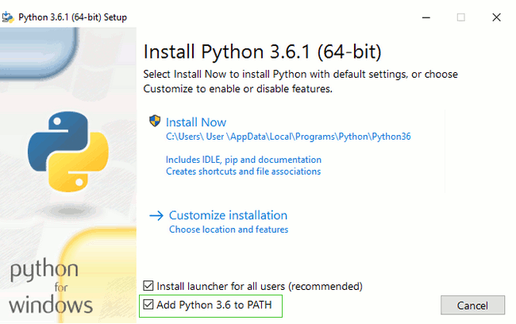

Instalación¶
En esta documentación vamos a mostrar el proceso de desarrollo de la aplicación de Costos Bocadillo, pero antes debemos saber los requerimientos previos y los procesos que se llevaron a cavo para este fin. A continuación, se dará a conocer la instalación de los complementos y aplicaciones que nos ayudaran con el avance por cada uno de los módulos de esta documentación.
Línea de comandos¶
Tip
Muchos de los pasos citados abajo hacen referencia a la “consola”, “terminal”, “ventana de comandos”, o “línea de comandos” – todos éstos términos significan la misma cosa: una ventana en tu computadora donde puedes introducir comandos.
Dependiendo de tu versión de Windows y tu teclado, una de las opciones siguientes debería abrir una ventana de comandos:
Ve al menú o pantalla de Inicio, y escribe “Símbolo del Sistema” en el cuadro de búsqueda.
Ve a Menú de inicio → Windows System → Command Prompt.
Ve al menú de Inicio → Todos los Programas → Accessorios → Símbolo del Sistema.
Ve a la pantalla de Inicio, pasa el ratón sobre la esquina inferior izquierda de la pantalla, y haz click en la flecha hacia abajo (en una pantalla táctil, desliza hacia arriba desde la parte baja de la pantalla). La página de la Aplicación debería abrirse. Haz click en Símbolo del Sistema en la sección Sistema de Windows.
Mantén la tecla especial de Windows de tu teclado y pulsa “X”. Elige “Símbolo del Sistema” del menú emergente.
Mantén pulsada la tecla de Windows y pulsa “R” para abrir una ventana “Ejecutar”. Escribe “cmd” en la caja, y haz click en OK.
Más adelante en este tutorial, necesitaremos tener dos consolas de comandos abiertas a la misma vez. Sin embargo, en algunas versiones de Windows, si ya tenemos abierta una ventana de comandos e intentamos abrir otra usando el mismo método, simplemente maximizará la que ya tenemos abierta. ¡Inténtemelo ahora en nuestro ordenador y vemos qué ocurre! Si solo se abre una ventana de comandos, intententaremos alguno de los otros métodos explicados anteriormente. Al menos uno de ellos debería abrir una nueva ventana de comandos. Una ventana de comandos que recomendamos es Cmander, ya que es es un paquete de software que proporciona una excelente experiencia de consola incluso en Windows.
Instalar Python¶
Django está escrito en Python. Necesitamos Python para hacer cualquier cosa en Django. ¡Empecemos con instalarlo! Debemos instalar la última versión de Python 3, así que, si tenemos una versión anterior, necesitaremos actualizarla. Si ya tenemos la versión 3.4 o una superior, debería ir bien. Instalemos Python normalmente de la siguiente forma:
Instalar Python: Windows¶
Podemos descargar Python para Windows desde la siguiente web https://www.python.org/downloads/windows/. Clica en el enlace “Latest Python 3 Release -Python x.x.x”. Si nuestro ordenador ejecuta la versión de 64 bits de Windows, descarga Windows x86-64 executable installer. De lo contrario, descarga Windows x86 executable installer. Después de descargar el instalador, deberíamos poder ejecutarlo (dándole doble click) y seguir las instrucciones.
Note
Una cosa para tener en cuenta: Durante la instalación, veremos una ventana de “Setup”. Asegurémonos de marcar las casillas “Add Python 3.6 to PATH” o “Add Python to your environment variables” y hacer click en “Install Now”, como se muestra aquí:
Cuando la instalación se complete, verás un cuadro de diálogo con un enlace que puedes seguir para saber más sobre Python o sobre la versión que has instalado.
Verifiquemos si la instalación fue exitosa abriendo una terminal o consola, y corriendo el comando python3:
> $ python3 --version
> Python 3.6.1Python 3.6.1
Instala un Editor de Código¶
Hay muchos editores diferentes y la elección es principalmente una cuestión de preferencia personal. La mayoría de programadores de Python usan IDEs (Entornos de Desarrollo Integrados) complejos pero muy potentes, como PyCharm.
Configura el entorno virtual (virtualenv) e instala Django¶
Entorno virtual¶
Antes de instalar Django, debemos instalar una herramienta extremadamente útil que nos ayudará a mantener nuestro entorno de desarrollo ordenado en nuestra computadora.
Así que, vamos a crear un entorno virtual (también llamado un virtualenv). Virtualenv aísla nuestra configuración de Python/Django para cada proyecto. Esto quiere decir que cualquier cambio que hagamos en un sitio web no afectará a ningún otro que estemos desarrollando.
Todo lo que necesitamos hacer es encontrar un directorio en el que queramos crear el virtualenv.
Para esto usaremos un nuevo directorio al que llamaremos :mod:`CostosBocadillo`, y dentro de este crearemos el entorno virtual y nuestro proyecto de Django.
Ya sea de manera manual o por consola, crearemos el directorio que ya mencionamos. Pero es necesario acceder a este con la consola.
>>> $ mkdir CostosBocadillo
Crear el directorio con consola.
>>> $ cd CostosBocadillo
Crear el directorio con consola.
Haremos un virtualenv llamado :mod:`costosbocadilloenv` o con el nombre que gusten . El comando general estará en el formato:
> $ python -m venv costosbocadilloenv
En general se verá algo así:
> C:\Users\Name\CostosBocadillo> python -m venv costosbocadilloenv
Trabajar con virtualenv¶
El comando anterior creará un directorio llamado :mod:`costosbocadilloenv` (o cualquier nombre que hayas elegido) que contiene nuestro entorno virtual.
Iniciamos el entorno virtual ejecutando:
> C:\Users\Name\CostosBocadillo> costosbocadilloenv\Scripts\activate
Sabremos que tenemos virtualenv iniciado cuando veamos que la línea de comando en nuestra consola tiene el prefijo (costosbocadilloenv).
>>> C:\Users\Name\CostosBocadillo
(costosbocadilloenv)
Instalar Django¶
Ahora que tenemos nuestro virtualenv iniciado, podemos instalar Django.
Antes de hacer eso, debemos asegurarnos que tenemos la última versión de pip, el software que utilizamos para instalar Django:
> (costosbocadilloenv) $ python -m pip install --upgrade pip
Para instalar Django usaremos el siguiente comando:
> (costosbocadilloenv) $ python -m pip install Django